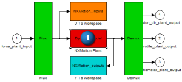
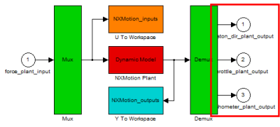
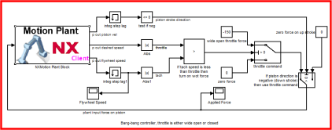

将 Motion Plant 块与框图连接
在 MATLAB Simulink 中执行这些步骤，要获取更多关于这些步骤的细节，参见 Simulink 帮助文档。
-
在 steam_force.mdl 控制系统框图中，双击 Motion Plant 块。
-
双击下图中
 所示的 Dynamic Model。
所示的 Dynamic Model。
-
在 NXMotion_Step 输入框中，输入5000。
-
在 Waiting Time 输入框中，输入100。
-
点击 OK。
-
在 Motion Plant 块中，注意看您在先前的步骤中定义的工厂输出的名称，以及它们在 Demux 上的位置。

各个工厂输出的位置对您该把工厂输出连接到控制框图的哪里是很重要的。
-
保存并关闭 Motion Plant 块。
-
在控制系统框图中，选择输入和输出连接器的末端，并将它们拖动到 Motion Plant 块上合适的输入和输出线头处。当您将它们放到与线头足够近的位置时，它们将捕捉这些位置，连接器必须与合适的线头相连。
控制框图中的连接器
工厂输入/输出线头
plant input force on piston
force_plant_input
p out piston vel
piston_dir_plant_output
p out flywheel speed
tachometer_plant_output
p out desired speed
throttle_plant_output
当完成连线后，框图应该看起来有些像这样：

-
选择 File→Save 以保存控制系统框图。